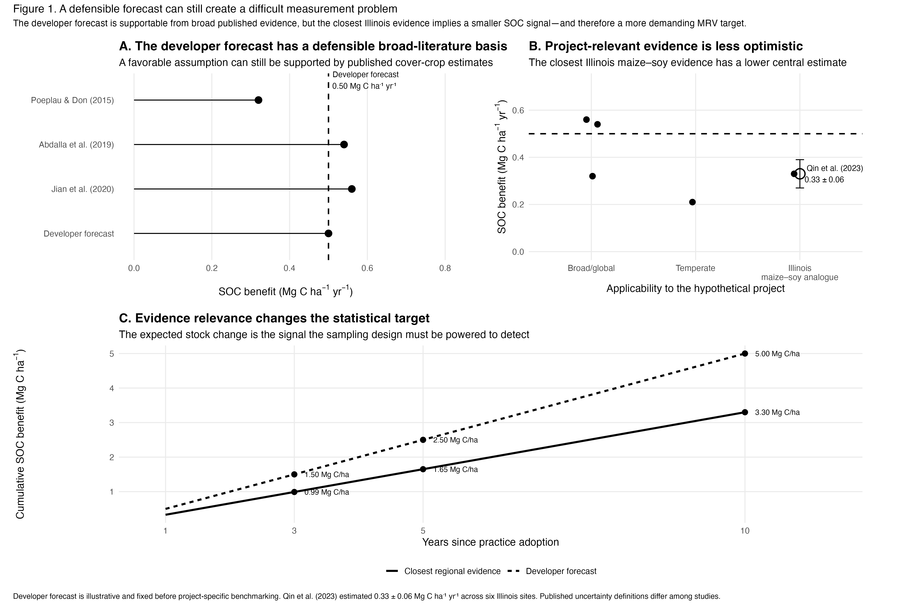
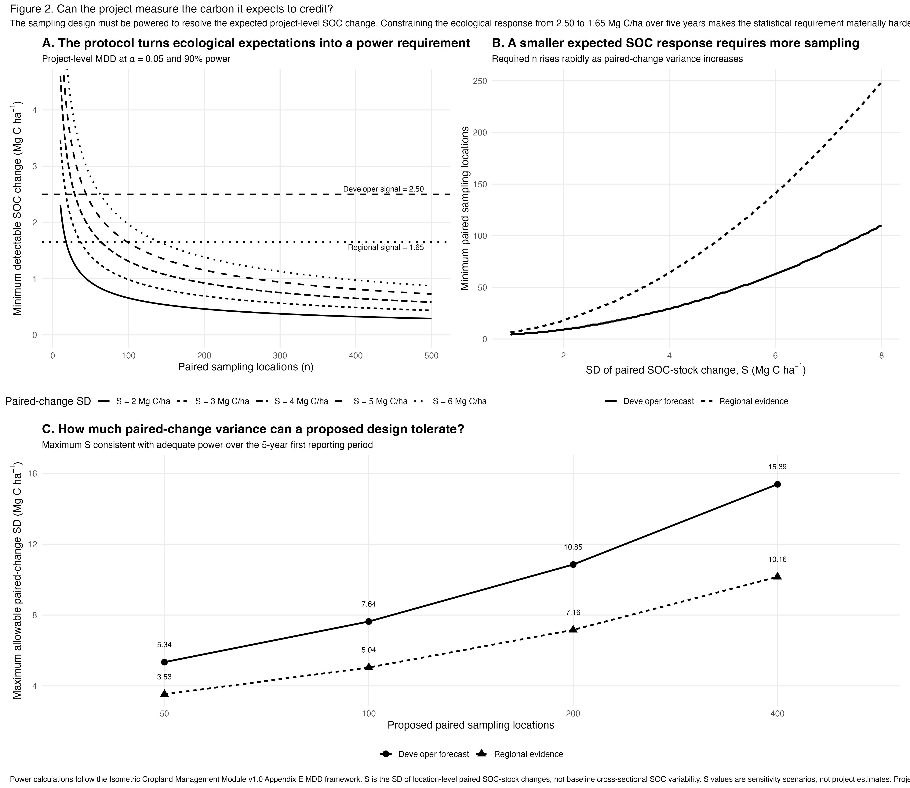
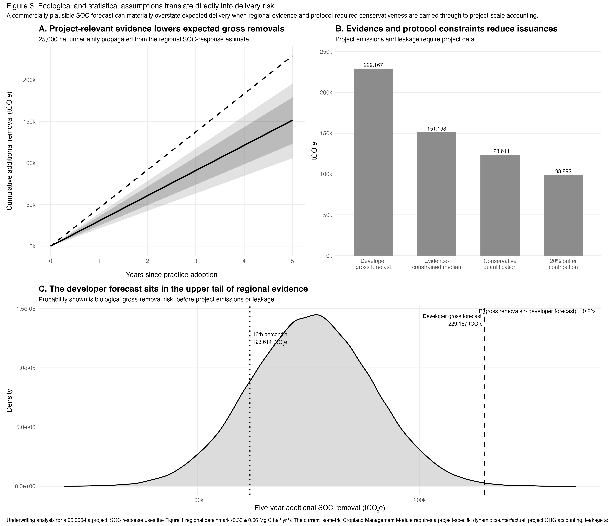

Agricultural soil carbon: from ecological assumptions to measurable delivery.
A 25,000-ha Central U.S. maize–soy project evaluated under Isometric's Cropland Management Module, connecting ecological evidence, statistical power, monitoring design, and potential carbon delivery.
A defensible forecast is not necessarily a conservative forecast.
Literature support is only the beginning. The diligence question is whether the evidence is representative of the fields being underwritten.
This project expected an SOC benefit of 0.50 Mg C ha⁻¹ yr⁻¹ following adoption of cover crops. That value was not an obviously unrealistic assumption: broad cover-crop studies include mean SOC responses near this magnitude.
We then narrowed the benchmark toward evidence more applicable to a Central U.S. maize–soy project. Qin et al. evaluated six Illinois cover-crop experiment sites and estimated an average SOC benefit of approximately 0.33 ± 0.06 Mg C ha⁻¹ yr⁻¹. The difference is not a claim that the broad literature is wrong. It is a question of transferability: geography, crop system, climate, soil properties, cover-crop type, and management all influence the expected SOC response.
Qin et al. (2023) provides the closest regional benchmark used here; the underlying six-site dataset is publicly available through the Illinois Data Bank.

Evidence relevance changes the monitoring target.
Reducing the expected SOC response from 0.50 to 0.33 Mg C ha⁻¹ yr⁻¹ reduces the expected five-year change by roughly 34%. Under Isometric, that ecological result also makes the statistical monitoring requirement harder to satisfy.
Can the project measure the carbon it expects to credit?
For soil carbon, delivery risk is partly biological and partly statistical.
Isometric's Cropland Management Module v1.0 makes detectability an explicit design requirement. The project sampling design must be capable of detecting a predefined project-level minimum detectable difference over the first reporting period with a two-sided significance level no greater than 0.05 and at least 90% statistical power.
The module expresses the relationship between the detectable SOC signal, sample size, and paired-change variance as:
Here, n is the number of paired sampling locations and S is the standard deviation of location-level paired SOC-stock changes. That distinction is critical: the relevant variance is not simply the spatial variation in absolute SOC stocks observed during the baseline campaign.
The statistical concern is supported by field evidence.
Long-term experiments show that SOC detectability can vary dramatically even within the same broad agricultural region. A study of 13 long-term sites across the North-Central United States found large among-site differences in minimum detectable SOC change. With five replicates, the estimated time required to detect SOC change under no-till ranged from roughly 11 to 71 years; detecting differences between moldboard plow and no-till ranged from approximately 8 years to more than 100 years. Variability, texture, replication, and carbon inputs all affected detectability.
This provides empirical justification for treating power as an underwriting variable rather than a purely theoretical requirement: the same true biological response can be easy to verify at one site and difficult to resolve at another.

Before project-specific paired-change variance is known, the design can be evaluated across a sensitivity range. Once pilot or pre-sampling data are available, the observed value of S can be inserted directly into the same framework.
For example, with 100 paired sampling locations, the developer's 2.50 Mg C ha⁻¹ expected five-year signal could tolerate paired-change SD of about 7.64 Mg C ha⁻¹ under this power framework. Using the regionally constrained 1.65 Mg C ha⁻¹ signal lowers that tolerance to approximately 5.04 Mg C ha⁻¹.
The same sampling plan can move from adequate to underpowered.
If observed paired-change variance exceeds the maximum supported by the proposed design, the project may need more locations, improved allocation or stratification, a longer reporting interval, or a revised expectation for the SOC signal it can credibly resolve.
Carry ecological and statistical uncertainty into delivery.
Gross SOC accumulation is not the same thing as issued carbon.
Across 25,000 ha, the developer's 0.50 Mg C ha⁻¹ yr⁻¹ assumption implies approximately 229,000 tCO₂e of gross additional SOC accumulation over five years. Replacing that forecast with the Illinois-centered evidence distribution produces an evidence-constrained median of approximately 151,000 tCO₂e before remaining project-specific accounting components.
The difference is not generated by an arbitrary haircut. It is the project-scale consequence of changing the ecological expectation itself, while retaining uncertainty around that expectation rather than treating the regional mean as known without error.

Under the uncertainty model, the developer gross forecast falls deep in the upper tail of the evidence-constrained biological response. The probability that gross SOC accumulation equals or exceeds the developer's gross five-year forecast is approximately 0.2%.
That is not a 0.2% probability of contractual delivery. Final issuance under Isometric also requires a project-specific counterfactual, relevant project GHG accounting, leakage assessment, uncertainty propagation through the net-removal calculation, and reversal-risk protection. The current module provides a default 20% Buffer Pool contribution or a project-specific risk-assessment route.
Quantity risk and measurement risk compound.
A lower expected SOC response reduces projected removals while simultaneously making the SOC signal harder to detect statistically. Those are related delivery risks, not independent checks.
Soil-carbon delivery depends on both sequestration and detectability.
The original 0.50 Mg C ha⁻¹ yr⁻¹ forecast could be supported by broad published evidence. More relevant regional evidence reduced the expected response to approximately 0.33 Mg C ha⁻¹ yr⁻¹, lowering the expected five-year SOC signal from 2.50 to 1.65 Mg C ha⁻¹. Because the methodology links the expected signal directly to statistical power, that ecological adjustment also changed how demanding the monitoring design needed to be.
The underwriting question
Can the evidence support the assumed SOC response, can the monitoring design reliably detect that response on the intended reporting timeline, and what distribution of delivery remains after those uncertainties are propagated through the methodology?